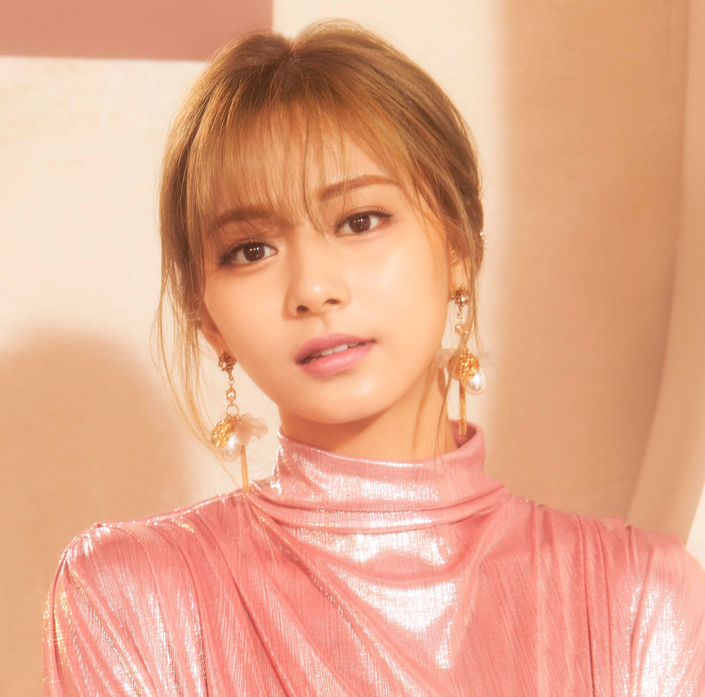
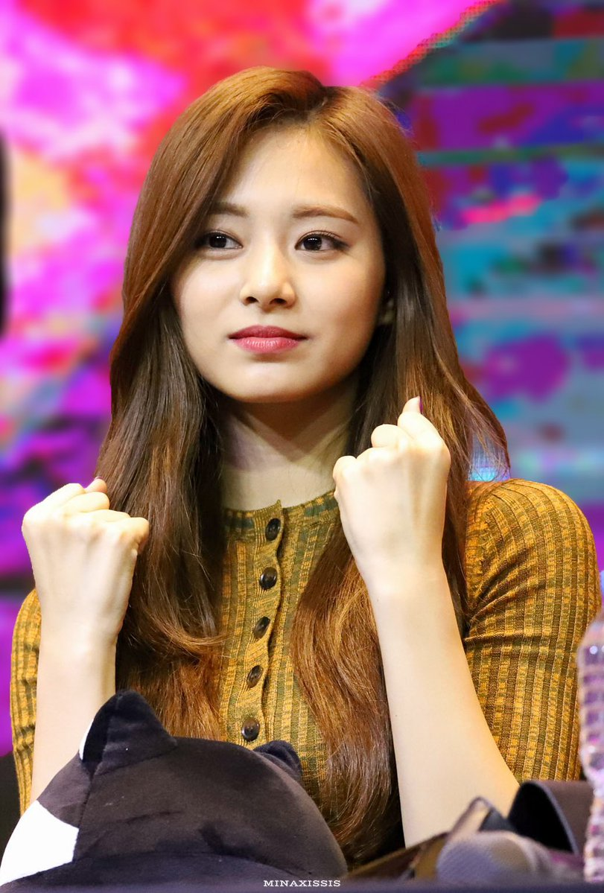

Tzuyu

Chou Tzu-yu (born June 14, 1999), known mononymously as Tzuyu, is a Taiwanese singer based in South Korea. Tzuyu is the youngest member of Twice, a K-pop girl group formed by JYP Entertainment.
In 2015, a televised appearance in South Korea in which she was shown holding the flag of Taiwan sparked controversy in China. A video of Tzuyu apologizing for the incident, subsequently released by JYP Entertainment on January 15, 2016, sparked further public outrage in Taiwan.
Early life
Chou Tzu-yu was born in the East District of Tainan, Taiwan on June 14, 1999 to self-made entrepreneurs.
Career
In 2012 Tzuyu was discovered by talent scouts at the MUSE Performing Arts Workshop in Tainan, and moved to South Korea in November that year to start her training. In 2016, Tzuyu passed an exam at Tainan Municipal Fusing Junior High School to certify her middle school education. She attended high school at Hanlim Multi Art School in South Korea and graduated in February 2019. In 2015 Tzuyu participated in the  South Korean reality television show Sixteen, hosted by JYP Entertainment and co-produced by Mnet. As one of nine successful participants, she went on to join the newly-formed girl group Twice. Unlike the other winners of Sixteen, Tzuyu was originally not included in the final lineup of winners, but was uniquely selected based on audience voting.In October 2015 Tzuyu officially debuted as a member of Twice with their first extended play, The Story Begins. The lead single "Like Ooh-Ahh" was the first K-pop debut song to reach 100 million views on YouTube.
Interesting facts
1) Tzuyu likes Yoda (“Star Wars”) and can impersonate him well, that’s why her nickname is Yoda.
2) When Tzuyu went back to Taiwan to take her middle school graduation exam, she signed her school desk.
3) She can flip her tongue and turn her hands around in a full circle.
4) Tzuyu is born into a rich family. Tzuyu’s mother is a major shareholder of a hospital in Taiwan. In fact, her mother has invested heavily into areas such as plastic surgery in Taiwan.
5) Tzuyu prefers to hear “She’s so talented” instead of “She’s so pretty”.